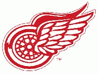
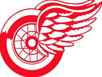
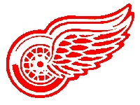

Early HistoryThe Detroit Red Wings were not always the well known and respected team that they are now. They began as a team called the Cougars, which were based in British Columbia. The team was sold to a group from Detroit in 1926, and was later awarded an NHL franchise in 1926. The team had won the Stanley Cup in 1925, and had been finalists in 1926, but they finished last in the 1926-27 season. The team was struggling with $80,000 in debt. The team began to pick itself up when Jack Adams because the team’s coach and general manager the following season, in which the team also adopted its home, the brand new Olympia Stadium. Despite picking up speed and having its own arena, the team was still struggling greatly. The team went through changes and became the Detroit Falcons in the 1930-31 season. James Norris Sr. purchased the team and saved it from financial issues. Adams and Nick met and agreed that the team would be named the Red Wings, after a team that Norris had once played on. Things picked up quickly for the Red Wings, and they became repeat Cup champions in 1937. The Wings continued to become a considerable foe, and the season that would come to be known as the NHL’s “Golden Age”, which lasted through the 1966-67 season, doubled the number of teams in the NHL to 12 teams. Recent HistoryThe Red Wings are still a major contender in the NHL. The Red Wings would go on to become back-to-back Stanley Cup winners in the 1997 and 1998 seasons. In the 2007-08 season, the team finished their third straight season of 50 or more winds, which was enough to capture the team’s sixth President’s Trophy. The team defeated the Pittsburg Penguins in the end of the 2007-08 season, and earned the team’s 11th Stanley Cup. Though the team has not won any Cups since this season, they have a staggering 23 year playoff streak, the longest running streak in the NHL. |
   |
This site is for educational purposes only. No commercial value.